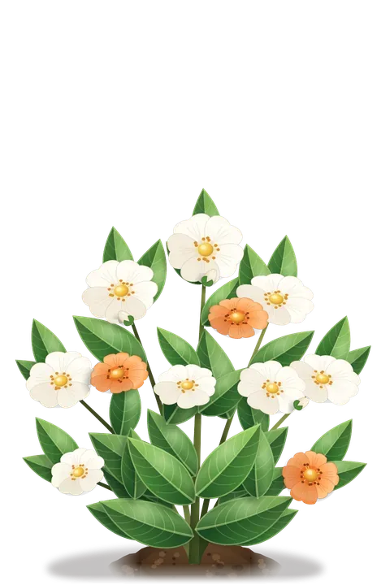
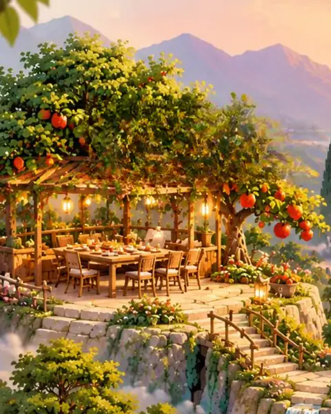
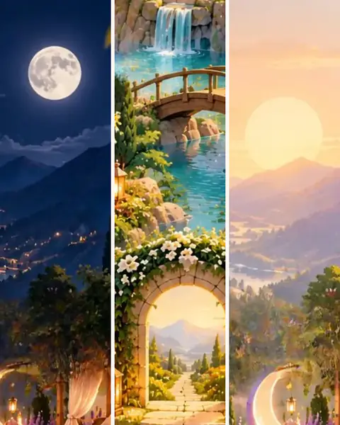
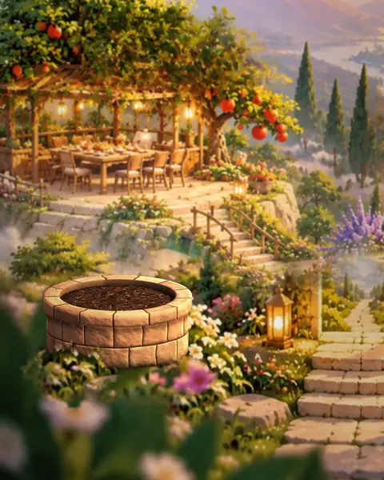
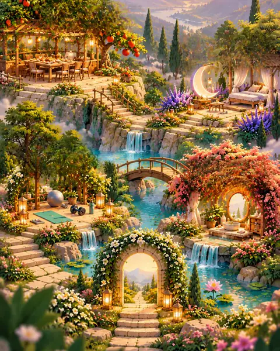
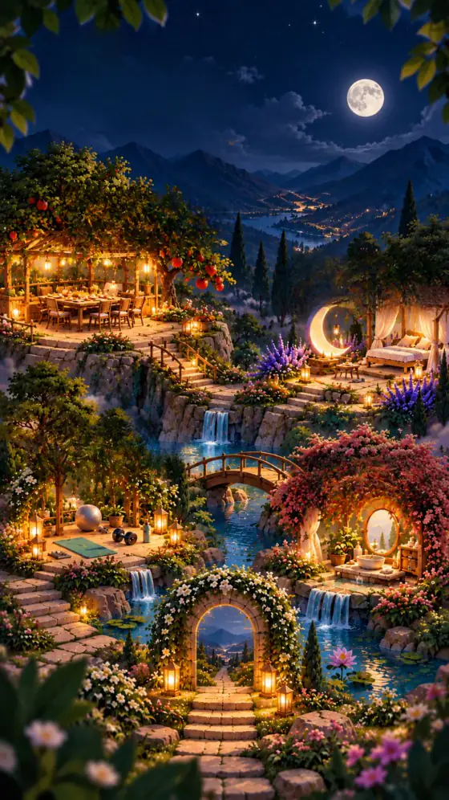

اپ وب
روی هر گوشی، در مرورگر باز میشود.
- روی اندروید، از منوی مرورگر «افزودن به صفحهی اصلی» را بزنید.
- روی آیفون، بذر را از منوی اشتراکگذاری به صفحهی اصلی اضافه کنید.
مسیری برای آگاهی، حضور و تغییر
بذر برای کم کردن فاصلهی میان دانستن و زندگی کردن آنچه میدانیم به وجود آمده است.

پایین بیایید تا رشد بذر را ببینید.
مراحل رشد
ریشه، جوانه، ساقه، برگ، گل
داخل بذر
ما در حال ساخت یک تجربهی شخصیسازیشده برای تغییر سبک زندگی هستیم.

شناخت
قبل از اینکه بذر بگوید «چه کار کنید»، سعی میکند بفهمد الان کجای مسیرید.

بخشهای روز
تسکهای مسیر در سه بخش روز میآیند: صبح، ظهر و عصر، شب.
مسیر
هر تسکی که انجام میدهید، کنارش جوانهای سبز میشود.
رکورد
هر روزی که دستکم یک تسک مسیر را انجام میدهید، یک برگ تازه به رکوردتان اضافه میشود.

دوره
ویسهای هر دوره مرحلهبهمرحله میآیند، از ریشه تا گل.

باغ بذر
سفرهخانهی زیر درخت، تخت زیر ماه، حیاط ورزش و آینهی میان گلها؛ هر دوره جای خودش را دارد.
رکورد
هر روزی که دستکم یک تسک مسیر را انجام میدهید، رکورد شما یک روز بلندتر میشود.
امتحان کنید: به بذر آب بدهید.
۰روز پشت هم
شب
شبها فانوسهای باغ روشن میشوند و بذر هم میخوابد.

بذر
با تسکهای شما شاد میشود، شبها میخوابد و برای رکوردتان سربلند است.
یک تسک انجام شد.
وقتی لمسش میکنید.
شبها، وقت خواب.
رکورد شما یک روز بلندتر شد.
قیمتها
نام طرحها، مدت و مبلغ هر کدام بهزودی همینجا اعلام میشود.
مبلغها و جزئیات هر طرح بعد از اعلام رسمی اینجا قرار میگیرند.
نصب
روی هر گوشی، در مرورگر باز میشود.
اپ اندروید بذر هم ساخته شده است. نشانی دریافتش بهزودی همینجا قرار میگیرد.
سؤالها
چیزهایی که معمولاً میپرسند.
نه. بذر فقط روی غذا یا وزن متمرکز نیست.
نه. بذر جایگزین رواندرمانی یا خدمات پزشکی نیست. تمرکز بذر روی Lifestyle Coaching، شناخت رفتار و ایجاد تغییرات قابل اجرا در زندگی روزمره است.
کمک میکند اطلاعاتی که در طول مسیر ثبت میکنید بهتر تحلیل شوند، الگوهای تکرارشونده شناسایی شوند و تجربهی شخصیتری داشته باشید.
We illuminate. You decide.ما مسیر را روشنتر میکنیم؛ انتخاب با شماست.